LABSIS
2020/2021
Autores:
André Oliveira (Nº 1181045)
1181045@isep.ipp.pt
Rodrigo Teixeira (Nº 1160843)
1160843@isep.ipp.pt
 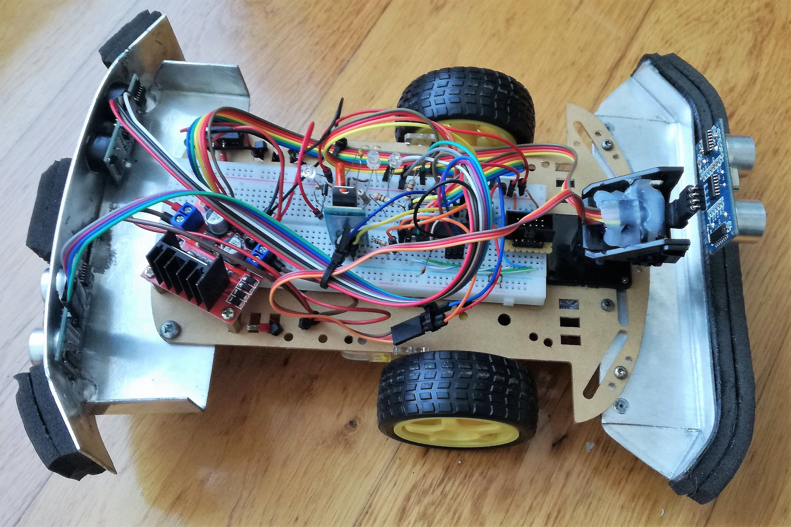
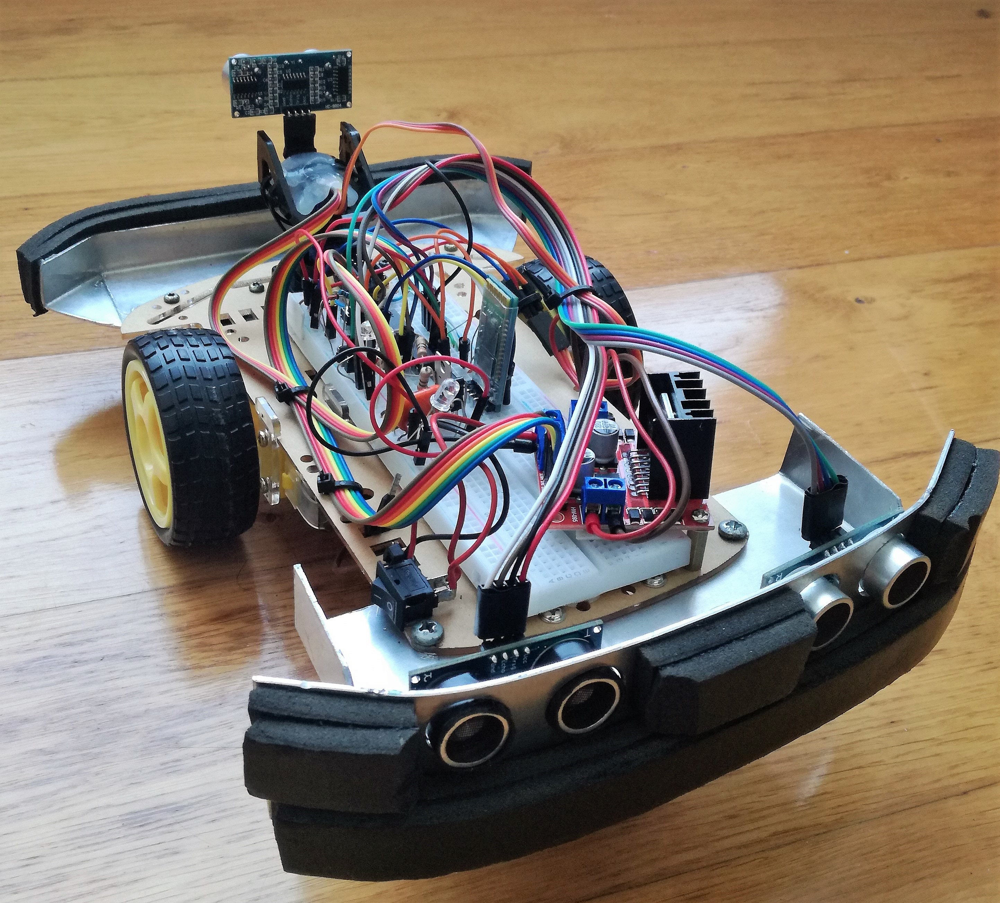
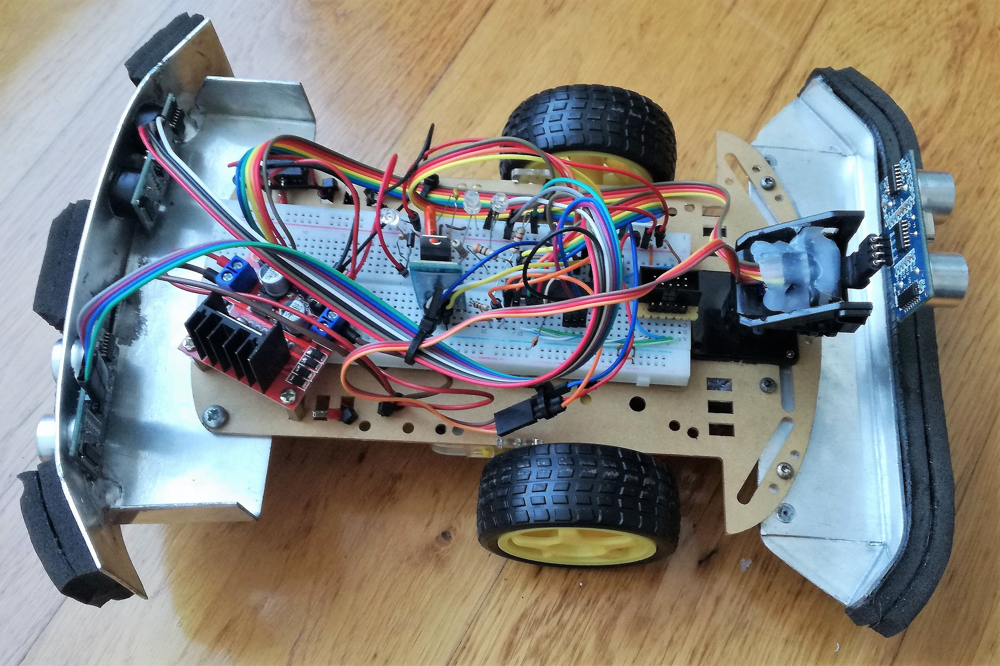
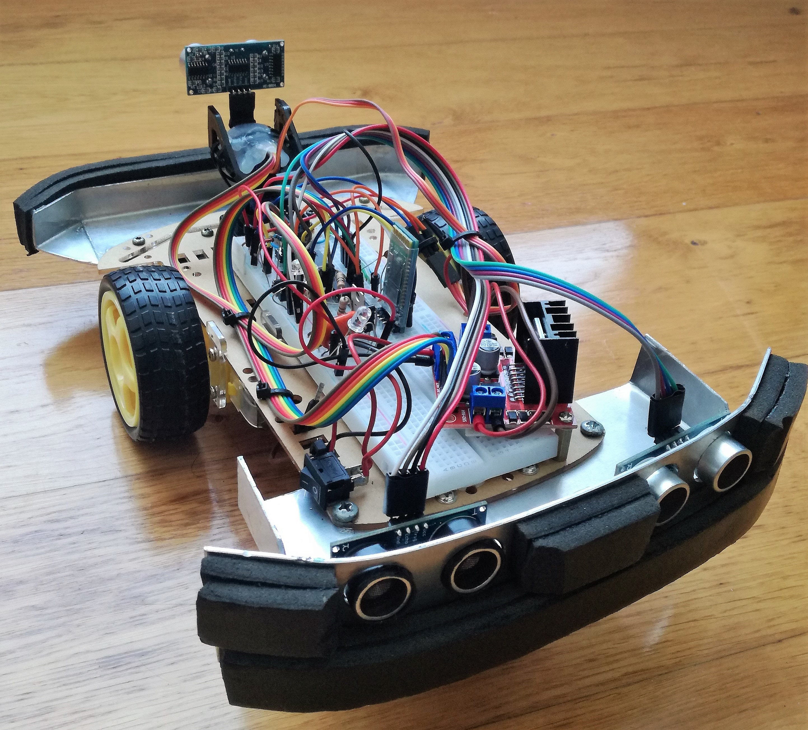
Objetivos
- Controlo do movimento do veículo, estabelecendo velocidade e sentido de rotação de 2 motores DC;
- Processamento dos dados obtidos por um sensor de proximidade ultrassónico de forma a definir o movimento do carro;
- Implementação do projeto segundo a orientação do microcontrolador ATMega328P;
- Desenvolvimento de toda a programação C assim como desenho das PCB necessárias á execução do projeto;
- Modulação de um sistema económico e de carácter didático;
Estado da Arte
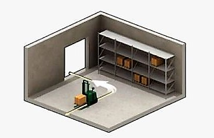 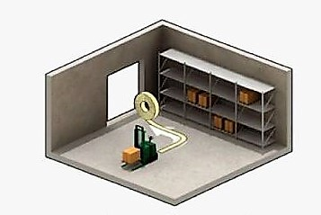 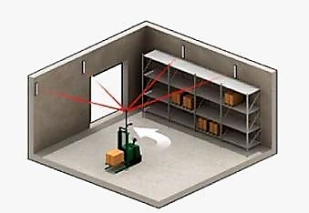
(a) Navegação por Sistema Filoguiado (b) Navegaço por uso de Fita Magnética/Pintada (c) Navegação por Sistema Triangulação Laser
Figura 1 - Métodos de Navegação
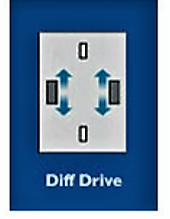
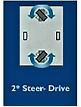
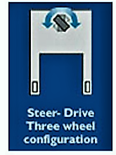

(a) Configurações diferenciais (b) Configuração unidirecional (c) Configurações omnidirecionais
Figura 2 - Configurações da locomoção dos AGV's
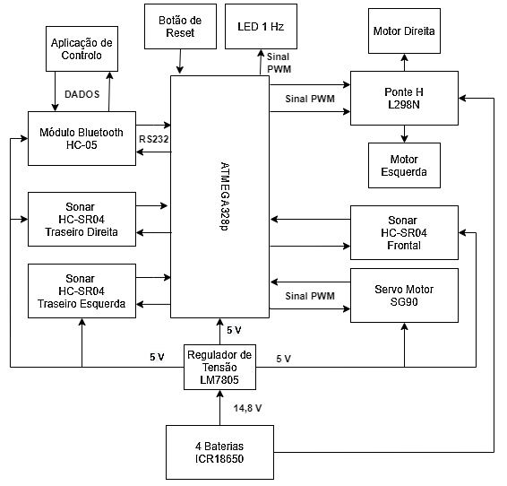
Figura 3 - Arquitetura do AGV
ATMega328P


(a) ATMega328P (b) Pinout
Figura 4 - ATMega328P
Circuito de alimentação
a. Regulador de Tensão LM7805
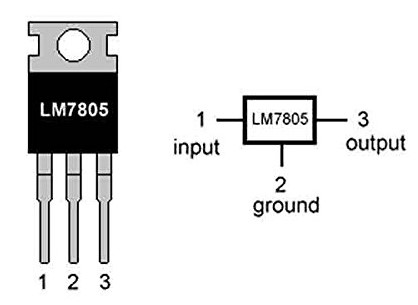
Figura 5 - LM7805
b. Baterias

Figura 6 - Bateria ICR18650
c. Circuito de proteção
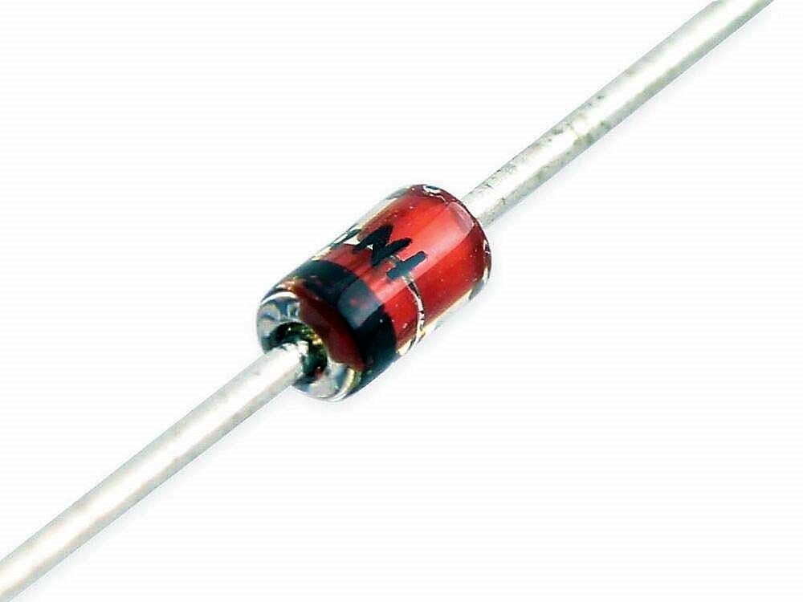
Figura 7 - Díodo Zener 5.1 V
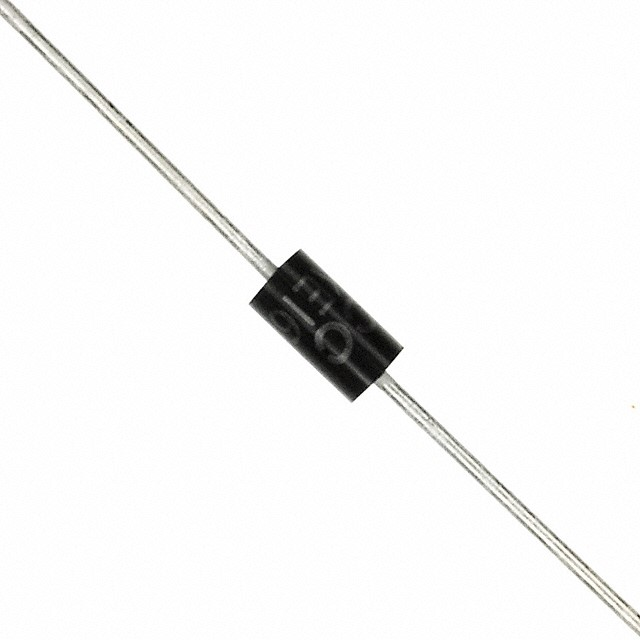
Figura 8 - TVS SMAJ5.0A
Módulo HC-05
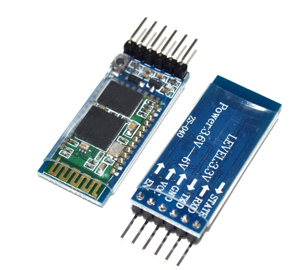
Figura 9 - Módulo HC-05
Sonar HC-SR04
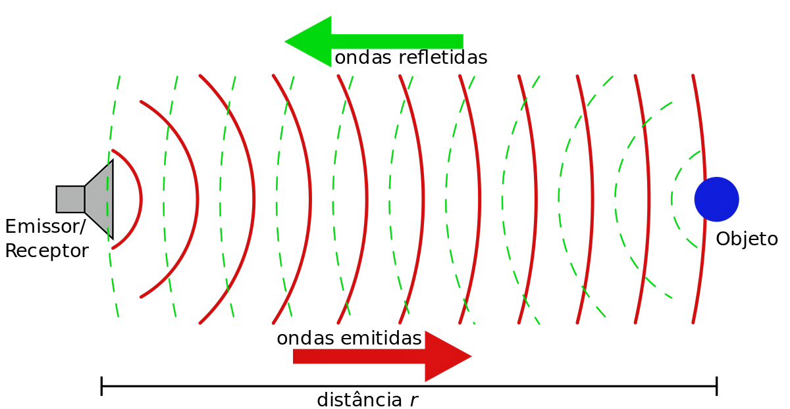
Figura 10 - Funcionamento do Sonar
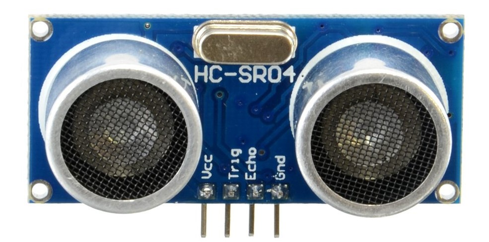
Figura 11 - Sonar HC-SR04
Ponte H

(a) Desligado (b) Sentido Normal (c) Sentido Contrário
Figura 12 - Ponte H

Figura 13 - Módulo Ponte H com CI L298N
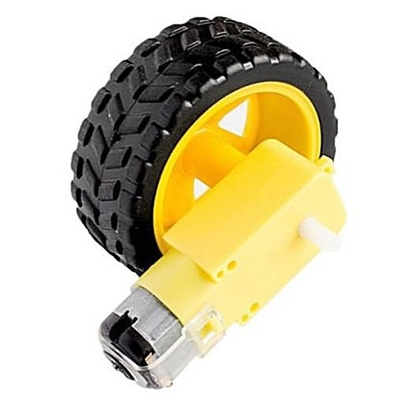
Figura 14 - Motor DC com roda
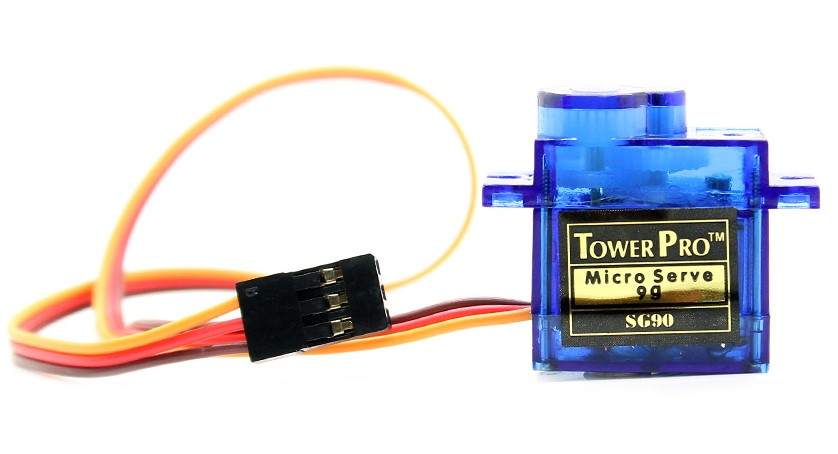
Figura 15 - Servo SG90
Roda livre giratória
Figura 16 - Roda livre giratória adotada
Para-choques
Programador
Figura 17 - Programador USBASP Figura 18 - Programador AVRDUDESS
Esquema Elétrico

Figura 19 - Esquema Elétrico do projeto
PCB

Figura 20 - PCB do projeto
Custo Total do Projeto
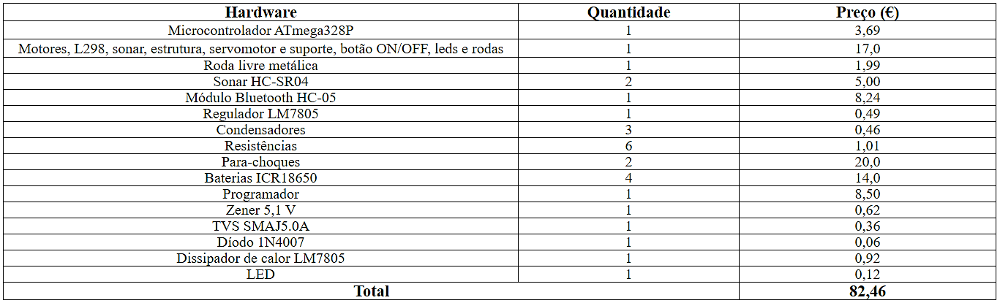
- <avr/io.h> - Permite a utilização dos I/O do microcontrolador e contém os nomes da maioria dos seus registos.
- <avr/interrupt.h> - Permite a utilização das interrupções do microcontrolador com maior comodidade através dos macros que esta estabelece, como por exemplo ativar/desativar globalmente as interrupções (bit I do SREG).
- <util/delay.h> - Permite o estabelecimento de um atraso propositado, como por exemplo a necessidade de um intervalo de espera enquanto o servo motor finaliza uma rotação (delay mecânico). Aconselha-se o estabelecimento da frequência a que o microcontrolador está a operar segundo o define (#define F_CPU 1000000UL).
- #define _500ms 244 - Valor que permite de certa forma aumentar intervalo de tempo estabelecido para a comutação do estado do LED (que opera a 1 Hz) durante a interrupção de overflow do TIMER0.
- #define pwm(val) 255*val/100 - Expressão responsável por converter o valor introduzido em "val" (duty cicle) percentual para uma base binária (0 a 255).
- #define dist_minf 50 - Distância mínima estabelecida para a zona de perigo do sonar da frente.
- #define dist_mint 30 - Distância mínima estabelecida para a zona de perigo do sonar de trás.
- #define ON 1 - Indica modo automático ativo.
- #define OFF 0 - Indica modo controlado ativo.
- CONFIGURAÇÕES DE REGISTOS
Equação 1
Equação 2
Equação 3
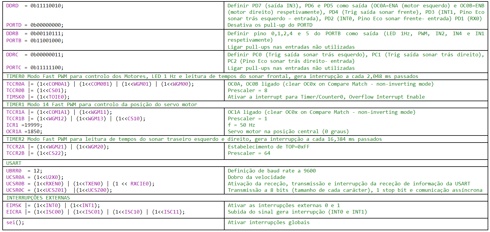
- FUNÇÃO MAIN
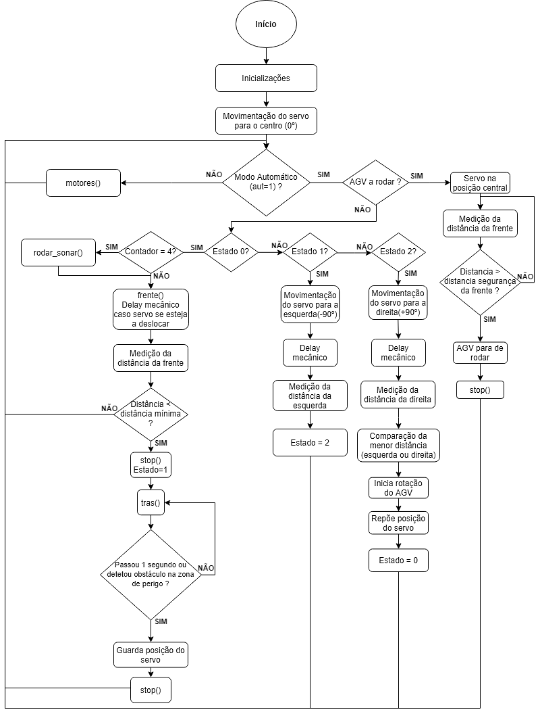
Figura 21 - Fluxograma da função Main

Figura 22 - Aplicação Bluetooth Electronics
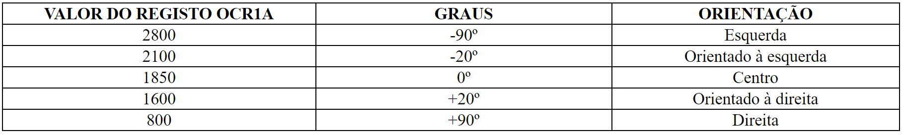
- ROTINA DE INTERRUPÇÃO DE OVERFLOW DO TIMER0
- Controlo do LED sinalizador de sistema ativo - Operação responsável por comutar o estado do LED a cada 500 ms. é realizado um decremento da variável cont_timer iniciada com o valor do define _500ms. Assim que este contador alcançar o valor zero, este é reiniciado e é alterado o estado do LED.
- Incremento do contador associado ao módulo ultrassónico frontal - Na ocorrência deste módulo se encontrar em espera pelo fim do impulso de ECHO por ele gerado, esta condição fica responsável por contar o número de overflows ocorridos que seguidamente serão processados noutra função.
- Controlo da velocidade de rotação dos motores - Segunda as configurações deste timer e tendo as saídas OC0A e OC0B ativas é possível alterar o duty cycle das ondas quadradas responsáveis por controlar a velocidade de rotação de cada motor alterando apenas o valor de registo OCR0A e OCR0B ao longo do código.
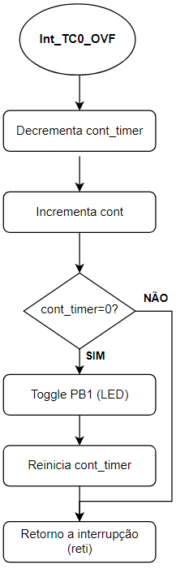
Figura 23 - Fluxograma da rotina de interrupção do TIMER0
- ROTINAS DE INTERRUPÇÕES EXTERNAS
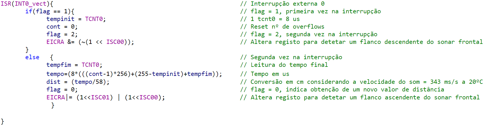
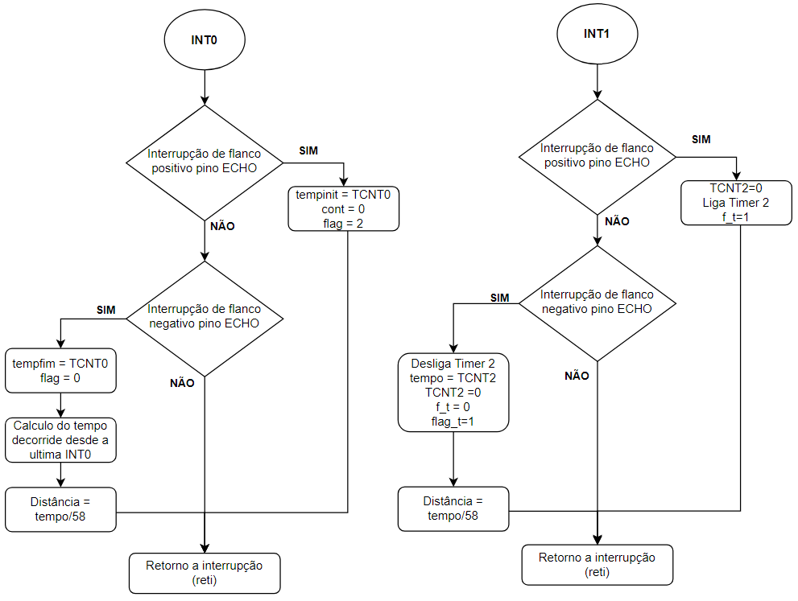
Figura 24 - Fluxograma das rotinas de interrupção externa INT0 e INT1
- FUNÇÃO DE DISPARO DO MÓDULO ULTRASSÓNICO
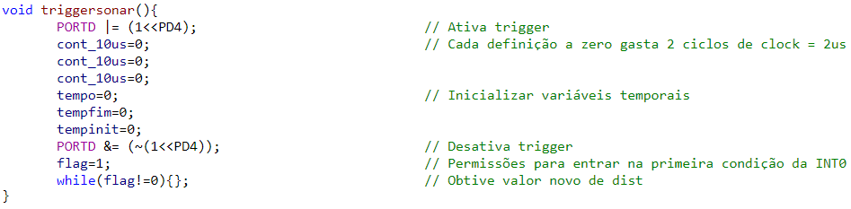
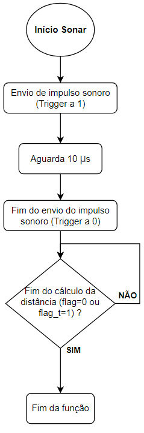
Figura 25 - Fluxograma para as funções dos módulos ultrassónicos
- ROTINA DE INTERRUPÇÃO DA USART
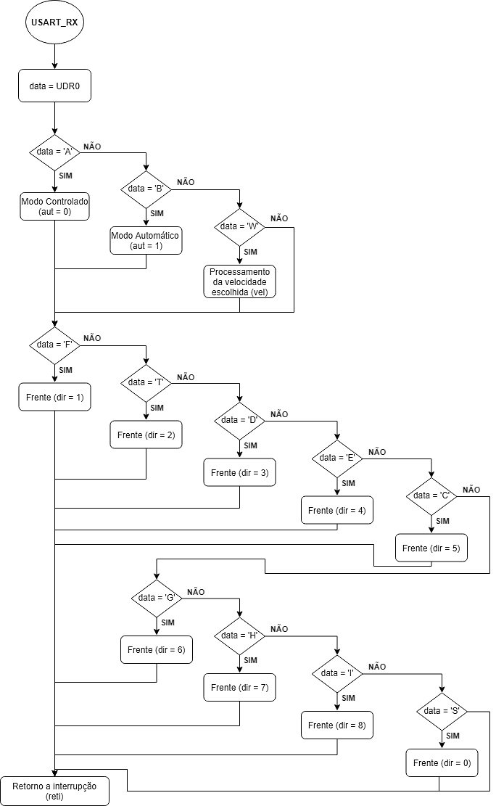
Figura 26 - Fluxograma da rotina de interrupçõo da USART
- FUNÇÃO DE ROTAÇÃO DA POSIÇÃO DO SONAR FRONTAL
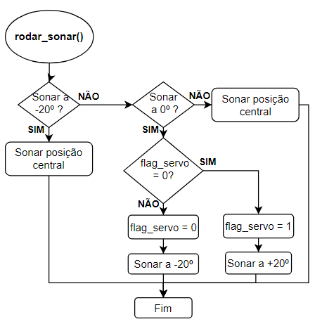
Figura 27 - Fluxograma da função de rotação da posição do sonar frontal
Principais dificuldades
Pontos fortes
- O varrimento do sonar frontal numa amplitude de 40 graus permitem uma maior adaptabilidade ao meio no qual este circula.
- As interrupções utilizadas permitem a poupança de tempo na execução das instruções, evitando overload no programa principal e, portanto, uma carga adicional do microprocessador.
- O sistema de alimentação responsivo constituído por diversos componentes de proteção é capaz de indicar ao utilizador a correta polarização da alimentação e proteger o microcontrolador de tensões de overshoot na passagem de 0 V para 5 V, dissipando esse excesso de potência na forma de calor.
- Controlo da velocidade estipulada pelo utilizador, limitando que esta corresponda a uma tensão contínua superior a 6 V para os motores.
Potenciais melhorias
- A limitação de recursos fornecidos pelo microcontrolador impediu-nos de implementar um display capaz de transmitir informação adicional, como sentido selecionado quando tem de escolher uma nova direção ou um amostrador dinâmico capaz de preencher o ecrã à medida que se aproxima de um obstáculo.
- Controlo da velocidade instantânea de cada motor, processamento e correção desta com vista na utilização de um encoder rotativo dado a existência de um disco perfurado que acompanha o eixo de cada roda.
- Aumentar a frequência de leitura dos sonares traseiros, fracionado ainda mais o tempo durante a deslocação para trás.
- Controlar o ângulo de rotação do sonar dianteiro recorrendo a dois sensores nas suas laterais, permitindo assim uma maior eficiência na realização dos “delays mecânicos” conforme mencionado.
- Implementação de um sensor de colisão, idêntico aos veículos pessoais e após processamento desta informação, parar o AGV se necessário.
- Teste de outros sonares presentes no mercado, como o SRF05 ou US-015 já que estes apresentam maior precisão nas leituras.
Considerações finais
[1] R. P. Rocha, "Estado da Arte da
Robótica Móvel em Portugal," pp. 1-21, 2001.
[2] P. M. S. T. de Castro, P. P. Camanho,
L. F. M. da Silva, and P. M. G. P. Moreira, "IDMEC - Faculdade de Engenharia da
Universidade do Porto," Int. J. Struct. Integr., vol. 1, no. 2, pp. 161-172,
2010.
[3] T. F. Cordeiro, "SISTEMA DE DETEÇÃO E
CONTORNO DE OBSTÁCULOS PARA ROBÓTICA MÓVEL BASEADO EM SENSOR KINECT," 2014.
[4] Y. J. Lee, "Effective use of android
sensors based on visualization of sensor information," Int. J. Multimed.
Ubiquitous Eng., vol. 10, no. 9, pp. 299-308, Sep. 2015.
[5] C. J. Snyman and T. I. Van Niekerk,
"Development of a Navigation System for an Autonomous Guided Vehicle using
Android Technology," vol. 4, no. 6, pp. 3027-3033, 2013.
[6] "Implementação de AGV's - Um estudo de
caso industrial." 2018.
[7] W.-C. Chiang, C. Ramamurthy, T. N.
Mundhenk, and E. L. Hall, "Range Detection for AGV Using a Rotating Sonar
Sensor."
[8] K. Roy, "Modelagem e Controle de um Veículo
Omnidirecional," Lead. Edge, vol. 31, pp. 1182-1191, 2012.
[9] J. M. De, F. Costa, P. Doutora, M. Da,
G. Vieira, and B. Almeida, "INSTITUTO SUPERIOR DE ENGENHARIA DE LISBOA
Automatização de sistema de separação de peças com recurso a um tapete rolante
e um robot e processamento de imagem."
[10] W. Preston, “The difference between THT and SMT | Harwin,” Harwin.com, 2018. [Online]. Available: https://www.harwin.com/the-difference-between-tht-and-smt/. [Accessed: 09-Jan-2021].
[11] Atmel, “ATmega328/P [Datasheet],” AVR Microcontrollers, 2016. [Online]. Available: https://datasheetspdf.com/pdf-file/1057332/ATMEL/ATmega328P/1.
[12] “LM78XX/LM78XXA 3-Terminal 1A Positive Voltage Regulator Features,” 2008.
[13] N. Dias, “Eletrónica Geral Laboratório de Sistemas,” 2015.
[14] “Como usar o Arduino Bluetooth HC-05 em modo mestre - FilipeFlop.” [Online]. Available: https://www.filipeflop.com/blog/tutorial-arduino-bluetooth-hc-05-mestre/?fbclid=IwAR2fkgeIQU-VOPWdT0cTb-zHDUcoqOHFGgNE_OUnQbfZDCV5kEwtwwrGWhA. [Accessed: 10-Nov-2020].
[15] “Configuração Master-Slave do HC-05 com Arduino | Curto Circuito.” [Online]. Available: https://www.curtocircuito.com.br/blog/arduino-e-hc-05:-configuracao-master-slave. [Accessed: 10-Nov-2020].
[16] LastMinuteEngineers, “How HC-SR04 Ultrasonic Sensor Works & Interface It With Arduino,” www.lastminuteengineers.com. [Online]. Available: https://lastminuteengineers.com/arduino-sr04-ultrasonic-sensor-tutorial/. [Accessed: 10-Nov-2020].
[17] “Sonar – Wikipédia, a enciclopédia livre.” [Online]. Available: https://pt.wikipedia.org/wiki/Sonar?fbclid=IwAR2oGFK6cbJUHsShFcwBzdZl9FYklx2-EQ3CKFshNqBr3UduXSTbd_28Xmg. [Accessed: 10-Nov-2020].
[18] F. dos Reis, “Como funciona uma Ponte H – Controle direcional de motores DC,” 2017. [Online]. Available: http://www.bosontreinamentos.com.br/eletronica/curso-de-eletronica/como-funciona-uma-ponte-h-controle-direcional-de-motores-dc/?fbclid=IwAR0DXLKpV2Z6XYc2ff_ku6I2li0YgwoSgimu4N_nCOBo8UVOFJ7uhKLkqA4. [Accessed: 10-Nov-2020].
[19] “Motores CC com L298N Dual H-Bridge e Arduino | Oficina DroneBot.” [Online]. Available: https://dronebotworkshop.com/dc-motors-l298n-h-bridge/. [Accessed: 10-Nov-2020].
[20] I. Kecerdasan and P. Ikep, “DC Gearbox Motor - ‘TT Motor,’”.
[21] “Servo Motor SG-90 Basics, Pinout, Wire Description, Datasheet,” Components101, 2017. [Online]. Available: https://components101.com/servo-motor-basics-pinout-datasheet?fbclid=IwAR3CeICaH49Y4P0pFIgmcZhpep8W-zw9wMr4Uoji4JHRUeFutT3EoTsu3sY. [Accessed: 11-Jan-2021].
[22] “Building and installing USBASP-USB programmer of AVR microcontrollers - Do It Easy With ScienceProg.” [Online]. Available: https://scienceprog.com/building-and-installing-usbasp-usb-programmer-of-avr-microcontrollers/. [Accessed: 07-Jan-2021].
[23] “Learn About ATmega328P Fuse Bits and How to Use Them with an External Crystal Oscillator.” [Online]. Available: https://www.allaboutcircuits.com/projects/atmega328p-fuse-bits-and-an-external-crystal-oscillator/. [Accessed: 25-Oct-2020].